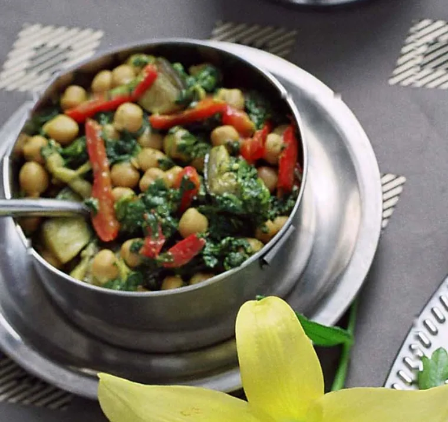
Seit 1996
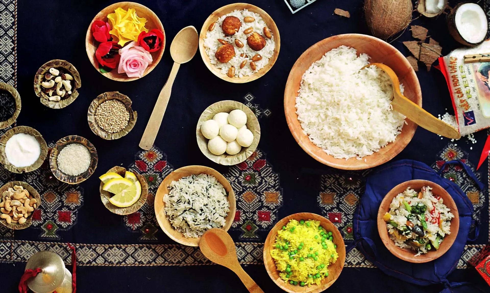
Govindas Higher Taste Catering Services
Ihr regionaler und vegan vegetarischer Catering-Service aus Potsdam, für Ihre Feier, Ihre Hochzeit oder jedes andere besondere Event.
„The embodied soul may be restricted from sense enjoyment, though the taste for sense objects remains. But, even this taste ceases for one who has realized the Higher Taste.“
„Die Sinne ziehen sich von den Objekten zurück für den Entsagenden, jedoch bleibt der Geschmack bestehen. Auch dieser Geschmack weicht, wenn der Höhere Geschmack erkannt wird.“
Bhagavad Gita Kapitel 2, Vers 59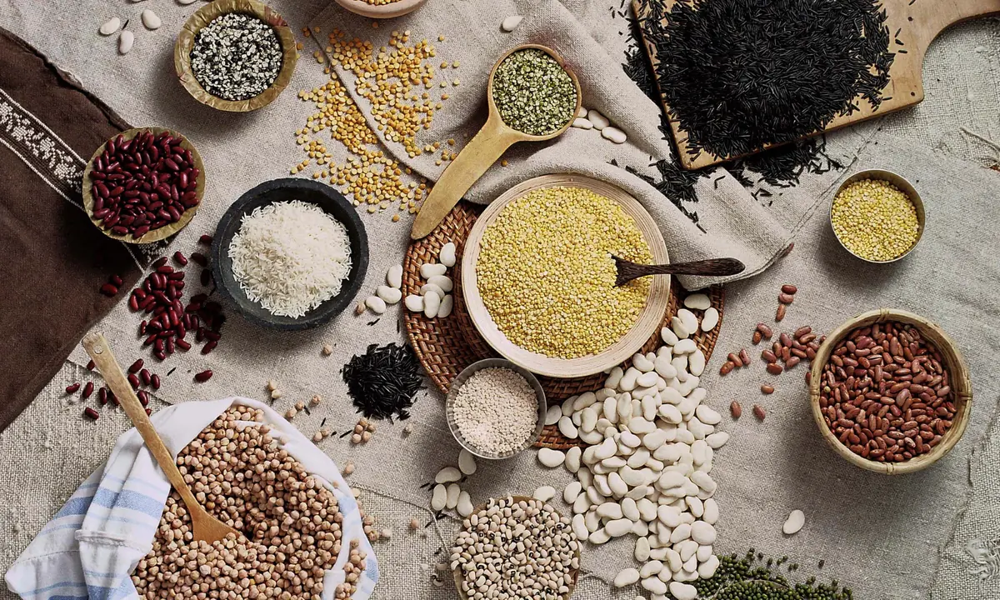
Willkommen
Erleben Sie kulinarische Genüsse der besonderen Art mit Govindas Higher Taste Catering Services, Ihrem regionalen und vegan vegetarischen Catering-Service aus Potsdam.
Unter der liebevollen Leitung von Frau Katharina Rauch bringen wir Geschmack und Qualität auf Ihre Feier, Hochzeit oder jedes andere besondere Event.

Katharina Rauch

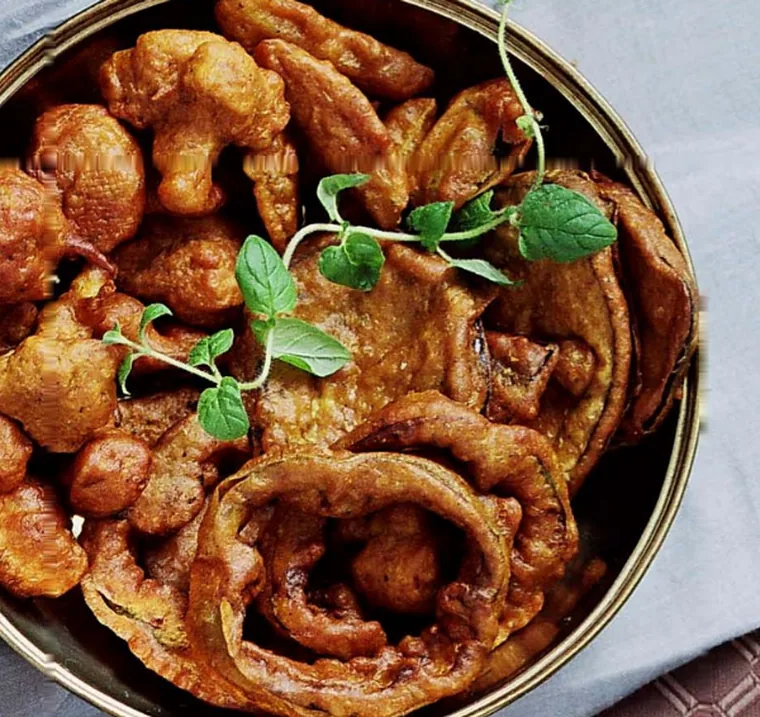
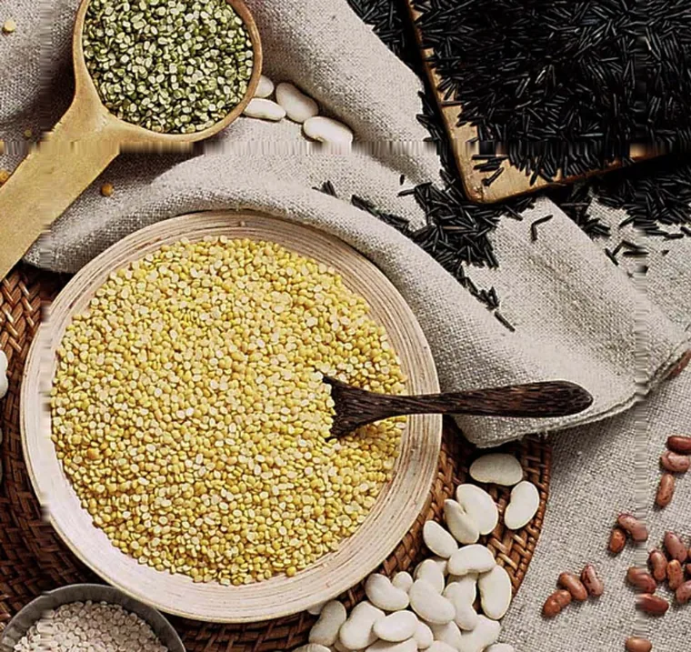
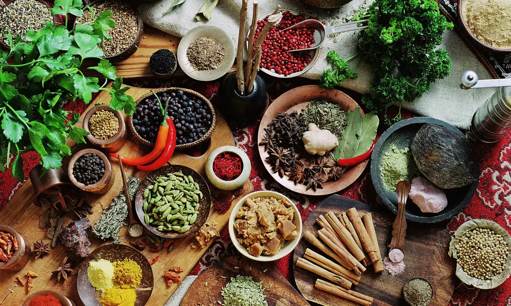
Unsere Philosophie
Es ist unsere Bestimmung, eine Kunst und ein Dialog zwischen Kultur und Geschmack.
Ursprünglich inspiriert von der vedischen Kochkunst, haben wir unser Repertoire erweitert und bieten Ihnen heute Gerichte aus allen Küchen der Welt.
Unsere Angebote
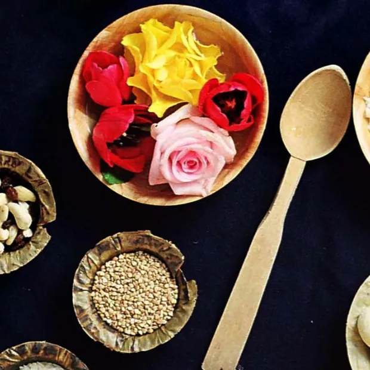
Wir setzen auf frische, regionale und naturbelassene Zutaten, um Ihnen und Ihren Gästen das Beste zu bieten.
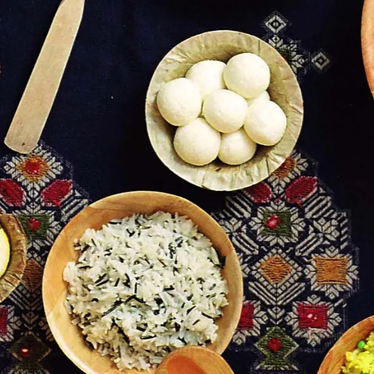
Lassen Sie sich von unserer veganen und vegetarischen Vielfalt begeistern. Unsere Gerichte sind so abwechslungsreich und kreativ wie die Weltküche selbst.
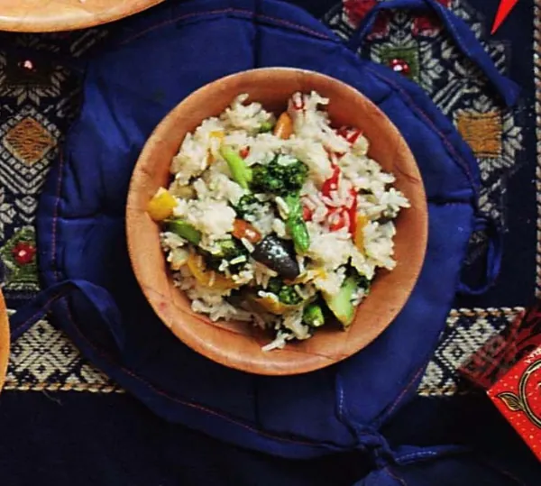
Ob kleine private Feiern oder große Hochzeitsgesellschaften, wir gestalten Ihr Event kulinarisch unvergesslich.
Über uns
Govindas Higher Taste Catering Services ist ein kleines Unternehmen, das von Frau Katharina Rauch geführt wird. Mit einer Leidenschaft für das Kochen, die sie seit ihrer Kindheit begleitet, setzt sie ihre Vision um, Menschen durch gutes Essen zu verbinden.
Ihr feines Gespür für Aromen und ihre künstlerische Herangehensweise machen jede Veranstaltung zu etwas Besonderem.
Warum Govindas Higher Taste
Frau Rauch bringt ihre jahrzehntelange Erfahrung und eine tiefe Leidenschaft für das Kochen in jedes Gericht ein.
Wir beraten Sie persönlich und individuell, um Ihr Event perfekt zu gestalten.
Mit unserem Fokus auf regionale, naturbelassene und pflanzenbasierte Produkte tragen wir zu einer nachhaltigen Zukunft bei.
So läuft eine Anfrage
Kurz per Formular oder Anruf. Datum, Ort, ungefähre Gästezahl und um welchen Anlass es geht.
Am Telefon oder bei einem Treffen. Was mögen Ihre Gäste, gibt es Unverträglichkeiten, was soll der Tag werden.
Menü oder Buffet, schriftlich, mit Preis pro Person. In Ruhe zu lesen und zu ändern, bis es passt.
Wir kochen frisch, richten an und sorgen dafür, dass alles zur richtigen Zeit auf dem Tisch steht.
Aus der Küche
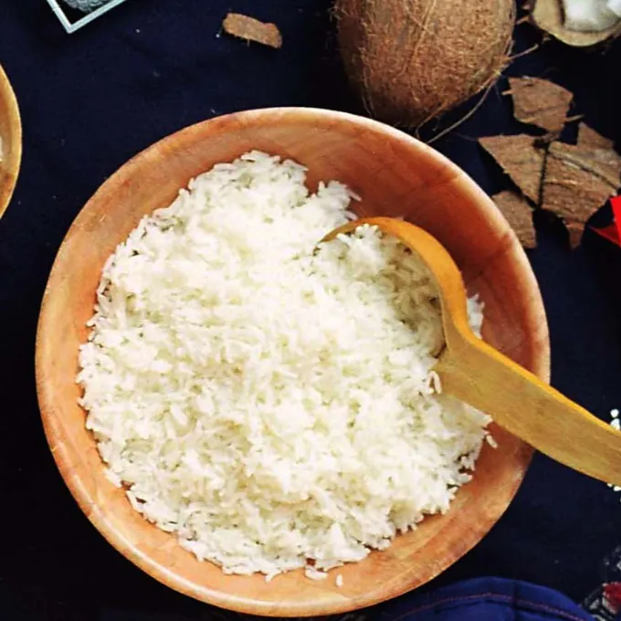
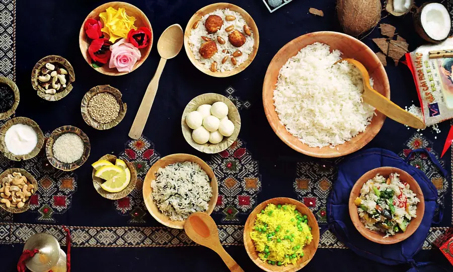
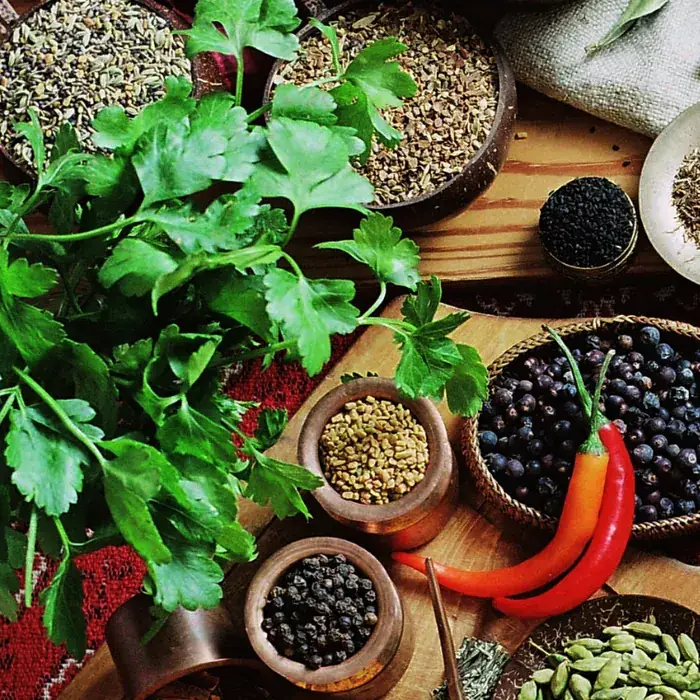
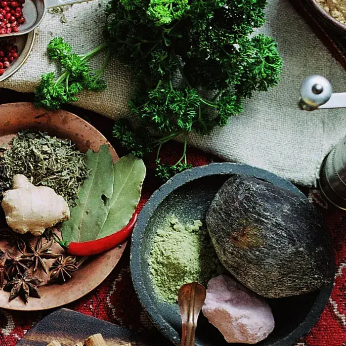
Kontaktieren Sie uns
Kontaktieren Sie Govindas Higher Taste Catering Services noch heute und erleben Sie Küche, die von Hand gemacht ist. Am besten schreiben Sie kurz, was ansteht. Wenn es schneller gehen soll, rufen Sie einfach an.